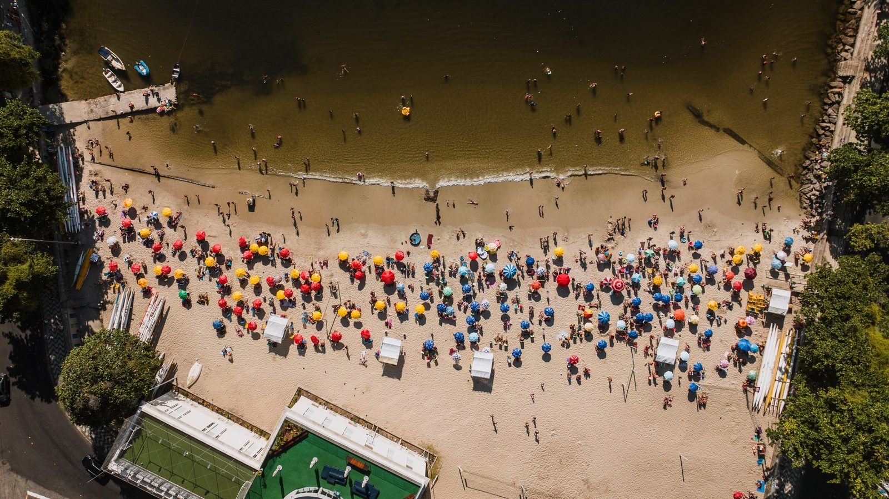

Itapema · Infraestrutura
Itapema · InfraestruturaO asfalto da alça nova da BR-101 em Itapema está pronto, e o prazo de cinco meses anunciado pela Prefeitura vence em 24 de setembro
O acesso que mexe justamente no item pior avaliado pelo turista.
O plano foi lançado no Hotel Itapema Beach em 9 de setembro, em parceria com o Sebrae/SC. Lemos as 228 páginas. O retrato do turista está lá, e ele vale mais que o anúncio: no verão de 2026 o gasto foi de mediana de R$ 1.858 por grupo por dia, com grupos de 5 pessoas, a permanência foi de 7 noites e 25,4% dos entrevistados vieram da Argentina. O item pior avaliado continua sendo o trânsito, que já era o ponto fraco em 2022.
Em 30 segundos · Modo de Leitura, formato original Santa Informa
Itapema lançou o Plano Municipal de Turismo.
Foi em 9 de setembro, no Hotel Itapema Beach.
Vale de 2026 a 2030, feito com o Sebrae/SC.
São 228 páginas e 6 eixos.
Dentro dele tem o retrato do nosso turista.
Ele sai de quatro pesquisas do Citmar.
Foram feitas nos verões de 2022, 2024, 2025 e 2026.
No verão de 2026 foram 201 entrevistas.
Gasto: mediana de R$ 1.858 por grupo por dia.
Cada grupo tinha 5 pessoas, na mediana.
Permanência: 7 noites.
25,4% dos entrevistados eram argentinos.
65,7% ficaram em casa ou apartamento alugado.
81,1% chegaram de carro.
Hospitalidade: 99,5% de nota boa.
Segurança: 93,5% de nota boa.
O pior item é o trânsito, desde 2022.
65,7% nem sabem que existe posto de informação.
TurismoPublicada em Redação Santa Informa

O turista que passou o verão de 2026 em Itapema gastou mediana de R$ 1.858 por grupo por dia, e o grupo tinha 5 pessoas na mediana. Ficou 7 noites. E, a cada quatro entrevistados, um era argentino: foram 25,4% de argentinos contra 66,7% de brasileiros. Os números não vieram de nota nova da Prefeitura. Eles estão dentro das 228 páginas do Plano Municipal de Turismo 2026 a 2030, lançado em 9 de setembro, no Hotel Itapema Beach, em parceria com o Sebrae/SC. Lemos o documento inteiro.
O plano faz a leitura de quatro pesquisas de demanda contratadas pelo Citmar, o consórcio de turismo da Costa Verde e Mar, que reúne dez municípios. Elas foram aplicadas na alta temporada, entre janeiro e março, nos anos de 2022, 2024, 2025 e 2026. Em 2023 não houve pesquisa com a mesma metodologia. O público entrevistado tinha mais de 18 anos, não morava em Itapema e estava na cidade havia pelo menos 24 horas. Foram 467 entrevistas em 2022, 211 em 2024, 200 em 2025 e 201 em 2026.
Essa conta o plano não faz, e ela é nossa. Dividindo o gasto pelo tamanho do grupo, dá R$ 138,28 por pessoa por dia em 2022, R$ 316,80 em 2024 e R$ 371,60 em 2026. A comparação tem um limite que precisa ficar escrito: 2022 e 2024 trazem média, e 2026 traz mediana, que são jeitos diferentes de resumir o mesmo dado. Os valores também não estão corrigidos pela inflação. Ainda assim, a direção é clara, e ela aparece junto com outra mudança: a permanência caiu de 9,4 noites em 2022 para 2 a 4 noites em 2024, e voltou a 7 noites em 2026.
A hospitalidade teve 99,5% de avaliações boas em 2026. A segurança teve 93,5% e os acessos, 82,1%. O ponto fraco é o mesmo desde a primeira pesquisa: o trânsito, que em 2026 foi classificado como regular por 26,9% dos entrevistados e que em 2025 tirou nota 6,5 numa escala de 0 a 10, a pior da lista. Tem ainda um item que chama atenção pelo tamanho: 65,7% dos turistas responderam que não sabem se a cidade tem serviço de informação ao visitante. O mesmo plano conta, umas páginas antes, que Itapema tem dois postos abertos o ano inteiro, o CAT da entrada da cidade, junto da Secretaria de Turismo, que abre em dia de semana das 12h às 18h, e o Mirante do Encanto, que abre todo dia no mesmo horário. A hospedagem confirma o perfil: 65,7% ficaram em casa ou apartamento de aluguel, e 81,1% chegaram de carro.
O resumo de 30 segundos está no topo e a versão completa é o texto acima. Aqui ficam as três leituras da casa sobre o mesmo assunto.
Clara, a otimista
Pela primeira vez a cidade tem, num documento público, o retrato do turista que ela recebe. Não é achismo de balcão nem conversa de fim de temporada: são quatro pesquisas seguidas, com método, e qualquer comerciante pode abrir o arquivo e ler.
E o retrato é bom. Quase todo mundo elogia a hospitalidade, quase todo mundo diz que volta, e o argentino voltou a aparecer forte depois de anos sumido. Quem trabalha com verão agora sabe para quem está vendendo, e isso muda a conversa de janeiro inteiro.
Seu Prudêncio, o criterioso
Merece atenção o tamanho da amostra. Duzentas e uma entrevistas numa cidade que multiplica de população no verão dá margem de erro larga, e o próprio plano registra que em 2024 houve desvio importante no perfil coletado. Número de pesquisa pequena serve para indicar tendência, não para fechar planilha.
Vale acompanhar também o trânsito. Ele é o pior item nas quatro pesquisas, de 2022 até agora, e o eixo de infraestrutura do plano tem nove fichas sem uma data e sem um nome de obra. Diagnóstico repetido quatro vezes sem prazo do lado vira diagnóstico de novo daqui a dois anos. A mesma observação vale para o custo: ficha de ação sem valor em reais é difícil de fiscalizar.
Uma sugestão útil: publicar o acompanhamento do Comtur numa página fixa do site, com o status de cada uma das 54 ações atualizado. Dito isso, o trabalho em si é sério e chegou na hora. Itapema tinha turismo como principal economia e não tinha plano escrito. Agora tem, e tem com diagnóstico de verdade dentro.
Caco, o sarcástico
Sessenta e cinco por cento dos turistas não sabem que a cidade tem posto de informação turística. Os postos existem, são dois, e abrem das 12h às 18h. Ou seja, fecham na hora em que o pessoal volta da praia e finalmente lembra que queria perguntar alguma coisa.
O trânsito é o pior item da pesquisa desde 2022. Consistência assim é raro, viu. Tem gente que não consegue ser ruim na mesma coisa quatro anos seguidos.
Mas vou reclamar do que interessa: o argentino voltou. Um em cada quatro. Vai encher a Meia Praia, vai estacionar torto e vai comprar tudo. Tá lotado porque o lugar é bom, e essa é a única reclamação que vale a pena ter.
Fontes: o gasto de R$ 1.858,00 por grupo por dia, a mediana de 5 pessoas por grupo, as 7 noites de permanência, os 25,4% de argentinos e 66,7% de brasileiros, os 65,7% de aluguel de casa e apartamento, os 23,4% de hotel e pousada, os 81,1% de automóvel, os 99,5% de hospitalidade, os 93,5% de segurança, os 82,1% de acessos, os 26,9% que acham o trânsito regular, os 65,7% que não conhecem o serviço de informação turística, o número de entrevistas de cada ano, a origem das pesquisas no Citmar, os seis eixos, as 54 ações e os prazos de curto, médio e longo prazo estão no arquivo do Plano Municipal de Turismo de Itapema, publicado pela Secretaria de Turismo de Itapema, que baixamos e lemos por inteiro. O lançamento em 9 de setembro no Hotel Itapema Beach, a parceria com o Sebrae/SC pelo programa Cidade Empreendedora, a vigência de 2026 a 2030 e as falas da secretária de Turismo Pati Marin, do prefeito Alexandre Xepa e do gerente do Sebrae/SC Aloisio Salomon estão no aviso oficial da Prefeitura de Itapema, de 10 de setembro de 2026. O gasto por pessoa por dia, a contagem das 55 fichas do plano de ação e a separação entre 33 “não iniciado” e 22 “em andamento” são contas nossas, feitas sobre o documento. As fotos do evento publicadas pela Prefeitura não foram usadas aqui porque mostram plateia identificável.
Itapema · InfraestruturaO acesso que mexe justamente no item pior avaliado pelo turista.
 Itapema · Poder Público
Itapema · Poder PúblicoOutro pedaço da estrutura que o visitante usa no verão.
 Itapema · Economia
Itapema · EconomiaDe onde sai o dinheiro que paga o que o plano promete.